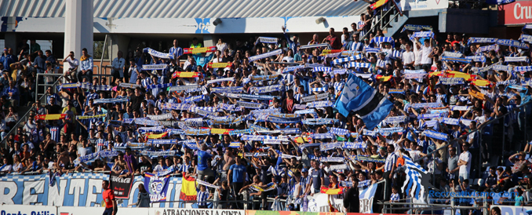

Cabecera
Título de ejemplo

Introducción del Estadio Nuevo Colombino
Explico que es para mi el Esradio y el Recreativo de Huelva
Para mi el Nuevo Colombino es el lugar donde desconecto del resto de cosas de mi alrededor, es el lugar de Huelva que más me gusta, la manera en la que conecto con el ambiente, los nervios abundan y es el lugar donde me he llevado muchas alegrias y otras tantas tristezas. El Recreativo de Huelva es el equipo de mi vida, desde que tengo conciencia he ido a todos los partidos en casa y tambien he ido a muchos en otras ciudades. Después de una época muy mala en el aspecto deportivo, estoy orgulloso de nunca haber dejado a mi equipo solo.